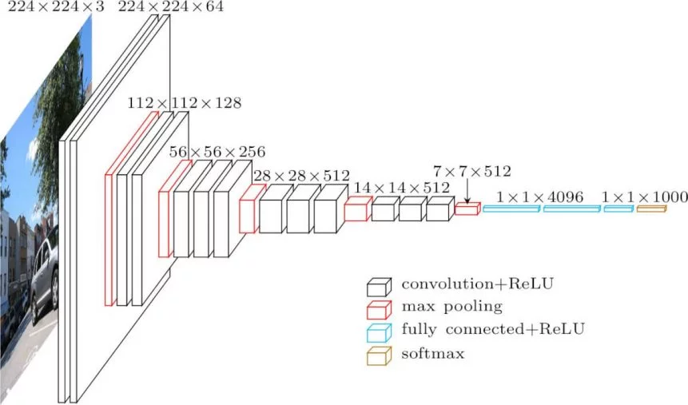

Understanding the inner values of a neural networks
Author
Thomas Manke
Published
July 10, 2026
Imports
import numpy as npimport torchimport torch.nn as nnimport torch.nn.functional as Ffrom torchvision import datasets, transformsfrom torch.utils.data import DataLoader, random_split, Subsetfrom sklearn.metrics import confusion_matrixfrom sklearn.model_selection import train_test_splitimport matplotlib.pyplot as pltfrom PIL import Imageimport osfrom lecture_utils.helper import detect_device, plot_grid
A trained network summarizes supervised data (images, labels) in terms of parameters (weights and biases).
Previously we looked at ways to ‘interprete’ the classification of a given image in terms of certain features.
Question
Can we understand the network and the function of individual neurons (without any image)?
Notice that this reductionist technique assumes that some aspects of neuronal fucntions can be understood detached from the network context (e.g. edge detectors, colour filters etc)
Choose Model (VGG16)

VGG16 Convolutional Neural Network
Pytorch Summary
Load VGG16 and Summarize
import torchvision.models as modelsfrom torchinfo import summary# load model and assign pretrained weightsmodel = models.vgg16(weights=models.VGG16_Weights.IMAGENET1K_V1)# load ImageNet class labelsclass_labels = models.VGG16_Weights.DEFAULT.meta["categories"]print(f"number of classes: {len(class_labels)}")# remember how to access certain layers# here: first and last conv layerfirst_conv_layer = model.features[0]last_conv_layer = model.features[28]print('Selected layers in VGG16')print('first_conv_layer:', first_conv_layer)print('last_conv_layer:', last_conv_layer)print('last_conv weights shape:', last_conv_layer.weight.shape)print('last_conv bias shape:', last_conv_layer.bias.shape)print('Set inplace=False for all ReLU layers')for m in model.modules():ifisinstance(m, torch.nn.ReLU): m.inplace =False
number of classes: 1000
Selected layers in VGG16
first_conv_layer: Conv2d(3, 64, kernel_size=(3, 3), stride=(1, 1), padding=(1, 1))
last_conv_layer: Conv2d(512, 512, kernel_size=(3, 3), stride=(1, 1), padding=(1, 1))
last_conv weights shape: torch.Size([512, 512, 3, 3])
last_conv bias shape: torch.Size([512])
Set inplace=False for all ReLU layers
Understanding neurons
Visualize Filters
First we might want to look at the trained parameters (>138M!!!)
Activation Maximization for 4 channels of first and last convolutional layers (feature maps: 0 and 28)
Uses
detect dead filters
compare models
Source Code
---title: Understand Neural Networksjupyter: pytorchdraft: falseimage: images/CNN_interpretation.pngdescription: Understanding the inner values of a neural networks---```{python}#| label: load_packages#| code-fold: true#| code-summary: Importsimport numpy as npimport torchimport torch.nn as nnimport torch.nn.functional as Ffrom torchvision import datasets, transformsfrom torch.utils.data import DataLoader, random_split, Subsetfrom sklearn.metrics import confusion_matrixfrom sklearn.model_selection import train_test_splitimport matplotlib.pyplot as pltfrom PIL import Imageimport osfrom lecture_utils.helper import detect_device, plot_grid```A trained network summarizes supervised data (images, labels) in terms of parameters (weights and biases).Previously we looked at ways to 'interprete' the classification of a given image in terms of certain features.::: {.callout-important}### QuestionCan we understand the network and the function of individual neurons (without any image)?:::Notice that this **reductionist technique** assumes that some aspects of neuronal fucntions can be understood detached from the network context (e.g. edge detectors, colour filters etc)## Choose Model (VGG16)### Pytorch Summary```{python}#| label: load_vgg16#| code-fold: true#| code-summary: Load VGG16 and Summarizeimport torchvision.models as modelsfrom torchinfo import summary# load model and assign pretrained weightsmodel = models.vgg16(weights=models.VGG16_Weights.IMAGENET1K_V1)# load ImageNet class labelsclass_labels = models.VGG16_Weights.DEFAULT.meta["categories"]print(f"number of classes: {len(class_labels)}")# remember how to access certain layers# here: first and last conv layerfirst_conv_layer = model.features[0]last_conv_layer = model.features[28]print('Selected layers in VGG16')print('first_conv_layer:', first_conv_layer)print('last_conv_layer:', last_conv_layer)print('last_conv weights shape:', last_conv_layer.weight.shape)print('last_conv bias shape:', last_conv_layer.bias.shape)print('Set inplace=False for all ReLU layers')for m in model.modules():ifisinstance(m, torch.nn.ReLU): m.inplace =False```## Understanding neurons### Visualize FiltersFirst we might want to look at the **trained** parameters (>138M!!!)```{python}#| label: plot_filter#| code-fold: truedef get_weights(model, layer_idx): weights = model.features[layer_idx].weight# normalize f_min = weights.min() f_max = weights.max() weights = (weights - f_min) / (f_max - f_min +1e-8)return weightslayer_id =0weights = get_weights(model, layer_id).detach().cpu()print(f"layer_id: {layer_id}, filter shape: {weights.shape}")cols =3rows =3plot_grid(weights.numpy().reshape(-1, 3, 3), rows, cols)```::: callout-noteIn general it is difficult to learn anything from trained filters (weights + biases):::### Visualize Neuron Preferences Rather than visualizing the neuronal weights it might be more interestingto visualize possible inputs that activate neurons maximally#### Use training dataFind image patches (in training data) that maximally activate a neuron from a given layer and channel*Reference*: Zeiler and Fergus (2014). Visualizing and understanding convolutional networks. Figure 2. [Link](https://link.springer.com/chapter/10.1007/978-3-319-10590-1_53){target="_blank" rel="noopener"}::: {.callout-important}- early layers detect simple patterns/colors, - deeper layers detect objects/concepts:::#### Optimizing Input Images Rather than using pre-exisitng images or image patcheswe can also generate new synthetic images that maximally activate a neuron.Interestingly this can be done using the same tools of backpropagation, but now extended to the image features itself (and not ust the parameters)::: {.callout-note}#### Mathematical Implementation - Activation MaximizationFor each layer $l$ and channel $c$ we can define the mean activation (single scalar) for a given input image $x$$$J_{l,c}(x) = \frac{1}{HW} \sum_{ij} f_{l,c}(x)$$- Fixed: network parameters- Chosen: layer $l$, channel $c$- Optimize: input image $x$ to maximize $J_{l,c}(x)$- Regularize: enforce constraints on image $x$ (smoothness etc)$$\underset{x}{\mbox{argmax}} \left( J_{l,c}(x) - \lambda R(x) \right)$$:::::: {.callout-note}#### Notes- c.f.loss minimization $L(w)$: optimize $w$! - network parameters $w$ fixed- **gradient ascent**: iterative optimization starting from random image- dependence on definition of $J_{l,c}$ (other definitions possible)- dependence on regularization $R(x)$ (smoothness, priors etc)- independent of data set !:::::: {.callout-note}#### Implementations- Lucid (TF 2018) [distill.pub (Olah et al.)](https://distill.pub/2018/building-blocks){target="_blank" rel="noopener"}- Lucent (PyTorch 2020) [(L. Kiat & T. Lieberum)](https://lucent.readthedocs.io/en/latest/index.html){target="_blank" rel="noopener"}:::::: {.callout-note}#### Uses- detect dead filters- compare models:::